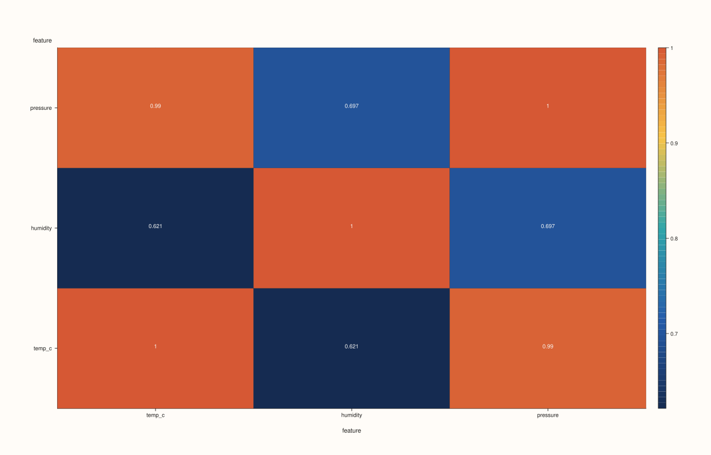
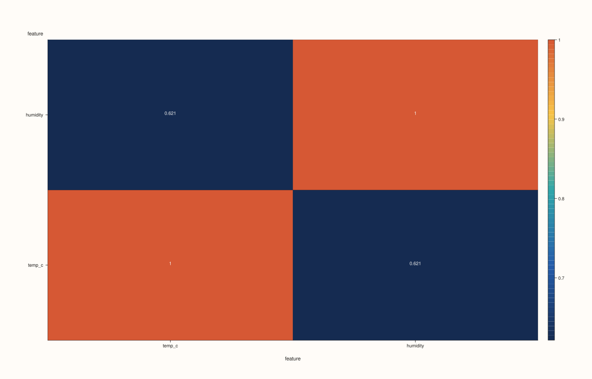
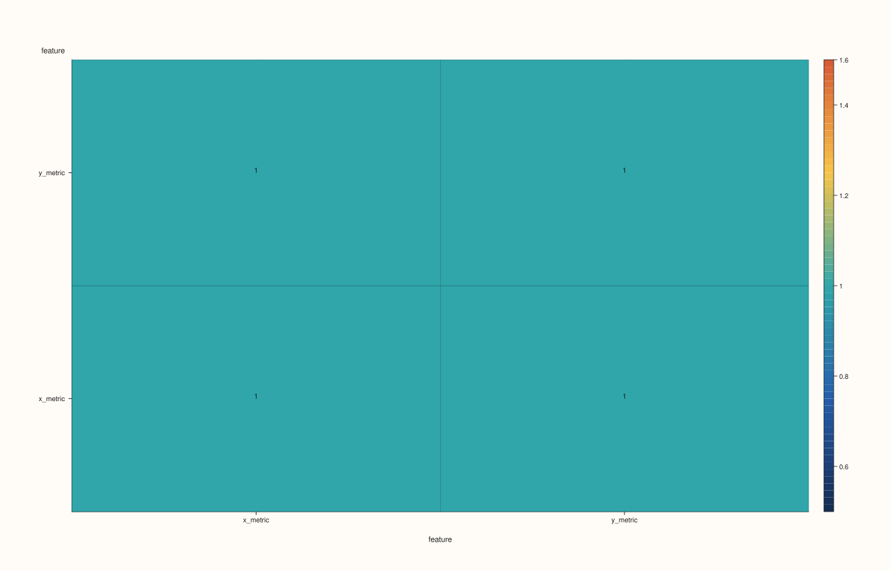

CatalogPlotAccessor::corr_heatmap¶
Back to CatalogPlotAccessor API Reference
Signatures¶
CatalogPlotAccessor::corr_heatmap(pluss::msharp::RangeView::Of<std::string_view> keys = {}) const -> pluss::pl::Studio
CatalogPlotAccessor::corr_heatmap(std::initializer_list<std::string_view> keys) const -> pluss::pl::Studio
CatalogPlotAccessor::corr_heatmap(pluss::msharp::RangeView::Of<std::string_view> keys,
const CatalogCorrHeatmapPlotOptions& options) const -> pluss::pl::Studio
CatalogPlotAccessor::corr_heatmap(std::initializer_list<std::string_view> keys,
const CatalogCorrHeatmapPlotOptions& options) const -> pluss::pl::Studio
What It Does¶
Builds an N×N correlation matrix over the selected keys and renders it as a color-coded
heatmap — cell (row, col) is the correlation between keys[row] and keys[col] (always
1.0 on the diagonal), using the shared pairwise-alignment machinery
scatter()’s numeric-pair branch and
scatter_matrix() both use.
Important
GlobalInner picks one alignment for the whole matrix, not per pair
With the default PairAlign::PairwiseInner, each off-diagonal cell aligns its own pair of
keys independently — two different cells can end up keeping different rows. With
PairAlign::GlobalInner, one shared alignment context (catalog_build_global_pair_context)
is computed once up front from every selected key, and every cell reuses it — so every
cell’s correlation is computed over the exact same subset of rows. See Example 3.
Parameters¶
keys (RangeView<std::string_view> or std::initializer_list<std::string_view>,
defaults to {})
Same resolution as line(): an empty range selects every
plottable key. At least two resolved keys are required —
"Catalog::plot().corr_heatmap: need at least two plottable streams" if fewer. See
Example 4.
options (CatalogCorrHeatmapPlotOptions)
```cpp
struct CatalogPairAlignOptions {
PairAlign align{PairAlign::PairwiseInner}; // PairwiseInner | GlobalInner
PairAlignBy align_by{PairAlignBy::Auto}; // Auto | Label | Pos
};
struct CorrHeatmapPlotOptions {
bool annotate_levels{true};
bool scale_guide{true};
bool borderless{false};
};
struct CatalogCorrHeatmapPlotOptions {
CatalogPairAlignOptions align{};
pluss::table::CorrHeatmapPlotOptions heatmap{};
pluss::table::DataFrame::CorrMethod method{pluss::table::DataFrame::CorrMethod::Pearson};
};
```
`align`/`align_by` control cross-key alignment (see the important callout above).
`heatmap.annotate_levels`/`scale_guide`/`borderless` forward straight into the underlying
`flash::heatmap` cell. `method` selects `Pearson` (default), `Spearman`, or `KendallTau`
correlation.
Returns¶
pluss::pl::Studio
A figure with one pane holding a single heatmap trace, tick-labeled with the selected
key names on both axes.
Examples¶
Example 1. Default: every plottable key, default PairwiseInner alignment, Pearson
correlation.
using namespace pluss::kindle::literals;
auto weather = pluss::kindle::Catalog({
"temp_c"_k = pluss::kindle::Stream(pluss::make_series({18.0, 19.5, 21.0, 20.0, 22.5, 17.5})),
"humidity"_k = pluss::kindle::Stream(pluss::make_series({55.0, 60.0, 65.0, 62.0, 58.0, 53.0})),
"pressure"_k = pluss::kindle::Stream(pluss::make_series({1005.0, 1008.0, 1010.0, 1009.0, 1012.0, 1004.0})),
});
auto chart = weather.plot().corr_heatmap();
chart.show();

Example 2. An explicit key subset via a brace-init list.
using namespace pluss::kindle::literals;
auto weather = pluss::kindle::Catalog({
"temp_c"_k = pluss::kindle::Stream(pluss::make_series({18.0, 19.5, 21.0, 20.0, 22.5, 17.5})),
"humidity"_k = pluss::kindle::Stream(pluss::make_series({55.0, 60.0, 65.0, 62.0, 58.0, 53.0})),
"pressure"_k = pluss::kindle::Stream(pluss::make_series({1005.0, 1008.0, 1010.0, 1009.0, 1012.0, 1004.0})),
});
auto chart = weather.plot().corr_heatmap({"temp_c", "humidity"});
chart.show();

Example 3. GlobalInner alignment with align_by = Label, and method = Spearman, over
two differently-labeled streams.
using namespace pluss::kindle::literals;
auto x_stream = pluss::kindle::Stream(pluss::make_series({10.0, 20.0, 30.0, 40.0, 50.0, 60.0}))
.with_label(pluss::table::Thread(pluss::make_note({"a", "b", "c", "d", "e", "f"})));
auto y_stream = pluss::kindle::Stream(pluss::make_series({1.0, 2.0, 3.0, 4.0, 5.0}))
.with_label(pluss::table::Thread(pluss::make_note({"b", "c", "d", "e", "f"})));
auto paired = pluss::kindle::Catalog({"x_metric"_k = x_stream, "y_metric"_k = y_stream});
pluss::kindle::CatalogCorrHeatmapPlotOptions options;
options.align.align = pluss::kindle::PairAlign::GlobalInner;
options.align.align_by = pluss::kindle::PairAlignBy::Label;
options.method = pluss::table::DataFrame::CorrMethod::Spearman;
auto chart = paired.plot().corr_heatmap({"x_metric", "y_metric"}, options);
chart.show();
Only the 5 labels present in both streams ("b".."f") are used to compute the
correlation — x_metric’s "a" row is dropped.

Example 4. Fewer than two resolved keys throws.
using namespace pluss::kindle::literals;
auto weather = pluss::kindle::Catalog({
"temp_c"_k = pluss::kindle::Stream(pluss::make_series({18.0, 19.5, 21.0})),
});
try {
auto bad = weather.plot().corr_heatmap({"temp_c"});
} catch (const std::exception& e) {
std::cout << e.what();
}
Output¶
Catalog::plot().corr_heatmap: need at least two plottable streams
Notes¶
An empty
keysselects every plottable key, the same ruleline()uses.At least two resolved keys are required — see Example 4.
A pair with fewer than 2 aligned points after alignment/dropping non-finite values renders as
NaNin that cell rather than throwing.GlobalInnercomputes one shared alignment context up front and reuses it for every cell;PairwiseInner(the default) aligns each cell’s pair independently — see the important callout above.Returns a
pluss::pl::Studio— seeline()’s important callout for how to view or save the result.
See Also¶
CatalogPlotAccessor::scatter_matrix: the same alignment machinery, rendered as pairwise scatter panels instead of a single correlation matrix.CatalogPlotAccessor::scatter: the two-key version of the numeric-pair alignment this method generalizes to N keys.